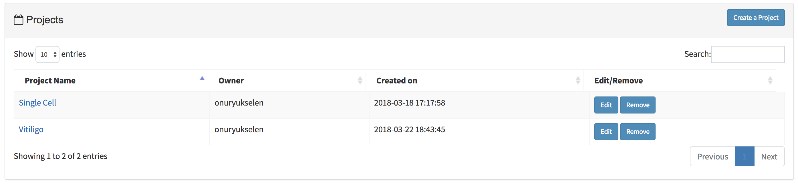
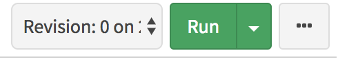

Project Guide¶
This guide shows how to create project and how to insert pipeline and file into it.
Creating Projects and Adding Pipelines¶
Projects are platforms to categorize all of your runs and files. To run a pipeline, it is required to add selected pipelines into your project. There are two ways to create a new project and add pipelines to it:

- First, click the “Projects” button in the top of the screen. In this new page, new projects can be inserted by clicking “Create a Project” button. After saving the name of the project, it will be added to your projects table as shown in the figure below:
Note
You can always edit or remove your projects by clicking “edit” or “remove” button on the project table.
- Now you are able to enter the “project page” by clicking the “name of the project” at the projects table. You will notice three sections in the project page:
- Description: Box to keep project related information.
- Project Runs: Table to add your pipelines as a run by clicking “Add Pipeline to Run” button. You may enter your run page by clicking “name of the run”.

- Project Files: Table for adding your project files. It allows you to reuse them in the multiple runs.


- Alternatively you may click the “Pipelines” button in the top left of the screen. Then select the pipeline you want run from left sidebar menu. At the right top of the page, you will notice “Run” button.
This button opens new window where you can create new project by clicking “Create a Project” button. After entering and saving the name of the project, it will be added to your project list. Now you can select your project by clicking on the project as shown in the figure below.

You may proceed with entering run name which will be added to your run list of the project. Clicking “Save run” will redirect to “run page” where you can initiate your run.
{kind=link}